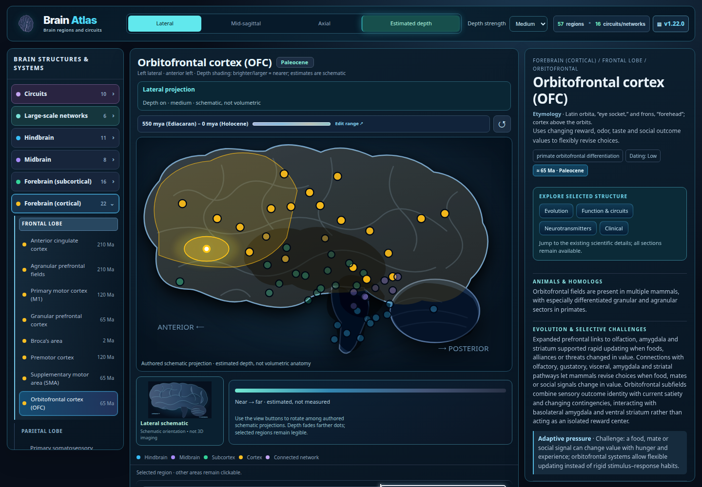

Actual · fresh browser capture

Original widget source unchanged. External HTTP(S) requests blocked for this offline capture.
Goal reference
goal_1.png · approved visual direction

goal_2.png · approved visual direction

Complete · 12
- WL-001 · p1 · done
Import and verify the Atlas baseline. - WL-003 · p1 · done
Maintain a categorized, prioritized live backlog. - WL-004 · p1 · done
Produce actual-versus-goal evidence and open it in feh. - WL-005 · p1 · done
Exercise Atlas browser interactions before visual refactoring. - WL-010 · p1 · done
Guard browser evidence against incomplete coverage and stale sources. - WL-019 · p1 · done
Refine Brain controls, map, and selected-region layout. - WL-020 · p1 · done
Verify Brain depth cues and projection selection with truthful labels. - WL-021 · p1 · done
Keep Brain hierarchy controls usable in the mobile grid. - T025 · p1 · done
Verify existing: Schematic per-angle depth visualization. - T029 · p1 · done
Verify existing: Keep existing region dots with exact click targets and view transforms. - I003 · p1 · done
Retain explicit schematic and estimated-depth labeling. - T026 · p1 · done
Verify existing: Low / medium / high depth strength.
Pending / verify · 29
- WL-006 · p1 · in-progress
Refine the goal-image layout without scientific regressions. - T001 · p1 · needs-verification
Verify existing: Retain compact one-line title/subtitle with responsive natural wrap. - T005 · p1 · needs-verification
Verify existing: Preserve historical changelog entries and click-to-expand version control. - T006 · p1 · needs-verification
Verify existing: Compact statistics typography and balanced rows. - T010 · p1 · proposed
Automate regression for header, popup, versions and mobile breakpoints. - T002 · p1 · proposed
Apply consistent navy gradient with subtle colored subject identity. - T003 · p1 · proposed
Match illustrated reference icon scale and clarity. - T004 · p1 · needs-verification
Verify existing: Align version and data chips, equal control heights. - T007 · p1 · needs-verification
Verify existing: Unify overlay spacing and one-row title/close control. - T008 · p1 · proposed
Consolidate hover/active/selected/focus styles and common green stat emphasis. - I001 · p1 · triage
Close remaining header/hero visual gap. - S022 · p1 · proposed
Standard keyboard, reduced-motion and visual-contrast test plan. - T009 · p2 · proposed
Match reference luminous panel edges and restrained atmospheric fills. - I026 · p2 · triage
Keyboard, contrast and responsive coverage is not maintained as a uniform regression matrix. - T027 · p1 · proposed
Upgrade from schematic to independently verified anatomical render assets. - T028 · p1 · proposed
Create striking sculptural main brain centerpiece with dimensional shadows. - T032 · p1 · proposed
Additional high-quality lateral/medial/dorsal/ventral view graphics. - T033 · p1 · proposed
Correct 3D coordinates/volumetric mesh for depth and structures. - T038 · p1 · proposed
Show evolutionary dates with scientific uncertainty. - T039 · p1 · proposed
Verify marker alignment and selection at every angle. - S003 · p1 · proposed
Improve brain centerpiece and selected-region emphasis. - T030 · p1 · proposed
Bright selected region outlines and location annotation. - T031 · p1 · proposed
Near-to-far opacity, size and subtle desaturation cues. - T034 · p1 · proposed
Show large selected-region name with functional/evolution tags. - T035 · p1 · proposed
Tabs for evolutionary history / function & circuits / clinical relevance. - T037 · p1 · proposed
Current view inset with selected structure accurately indicated. - S004 · p1 · proposed
Persistent selected-region facts panel. - S020 · p1 · proposed
Add a coordinate-provenance route for future true depth. - T036 · p2 · proposed
Region-specific neurotransmitters and mechanisms.